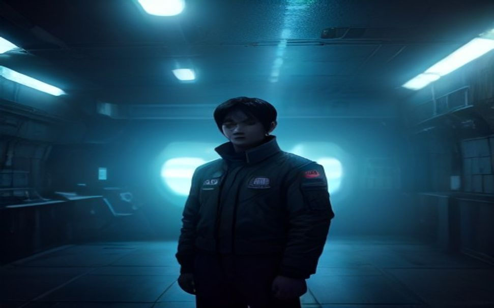
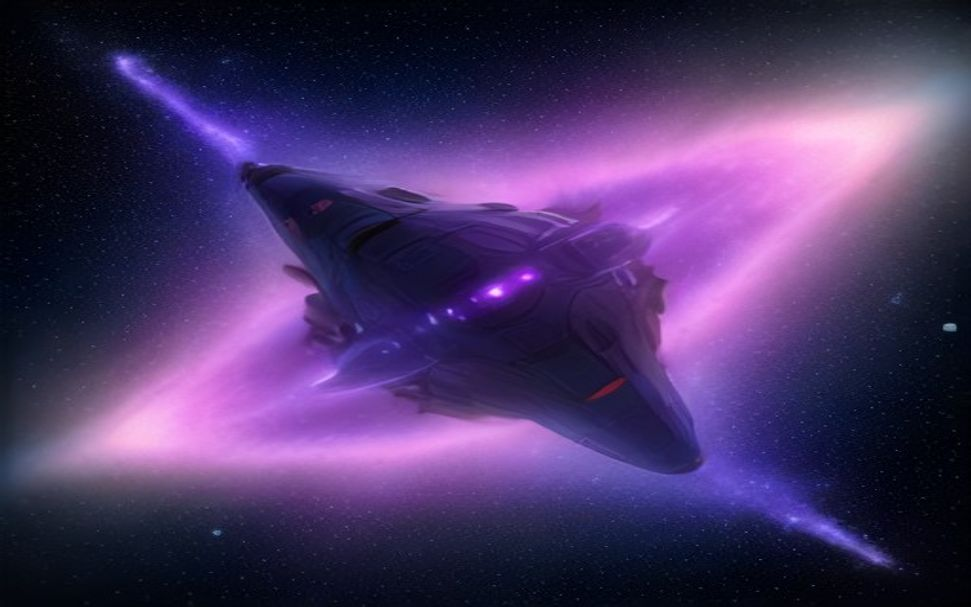
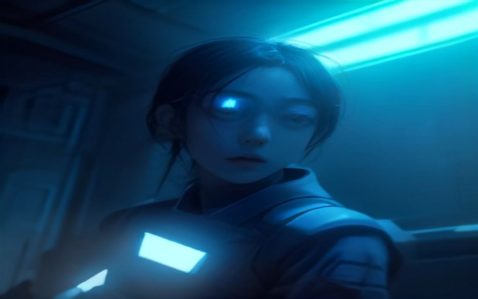
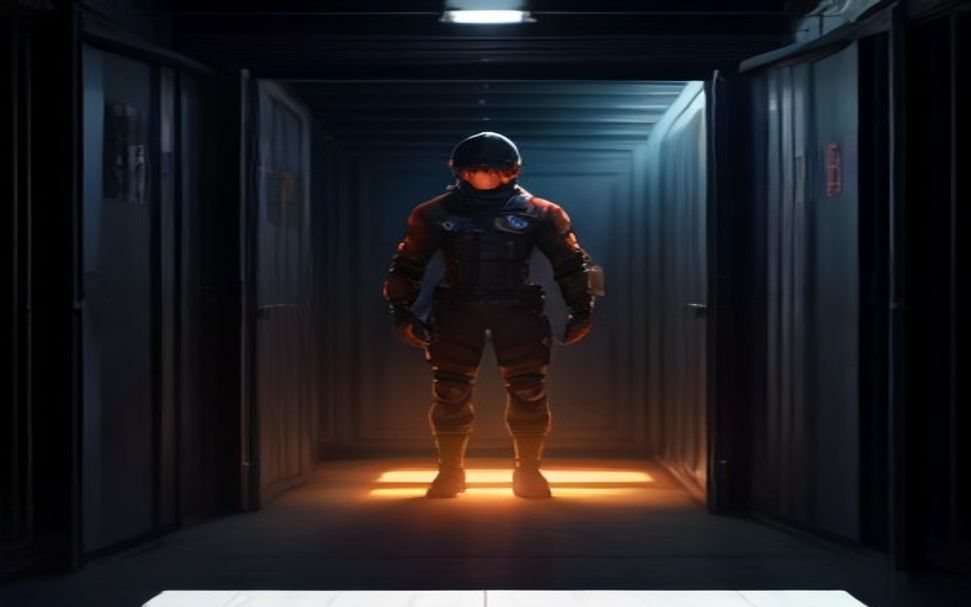
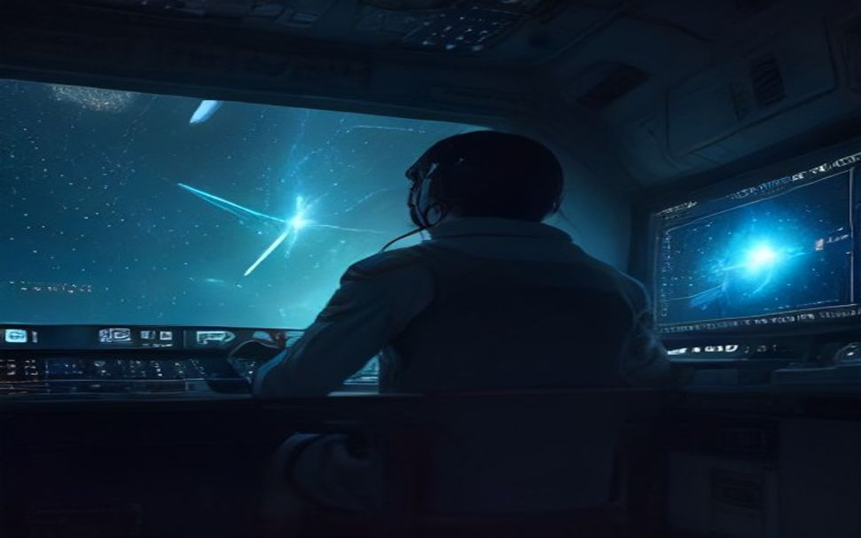
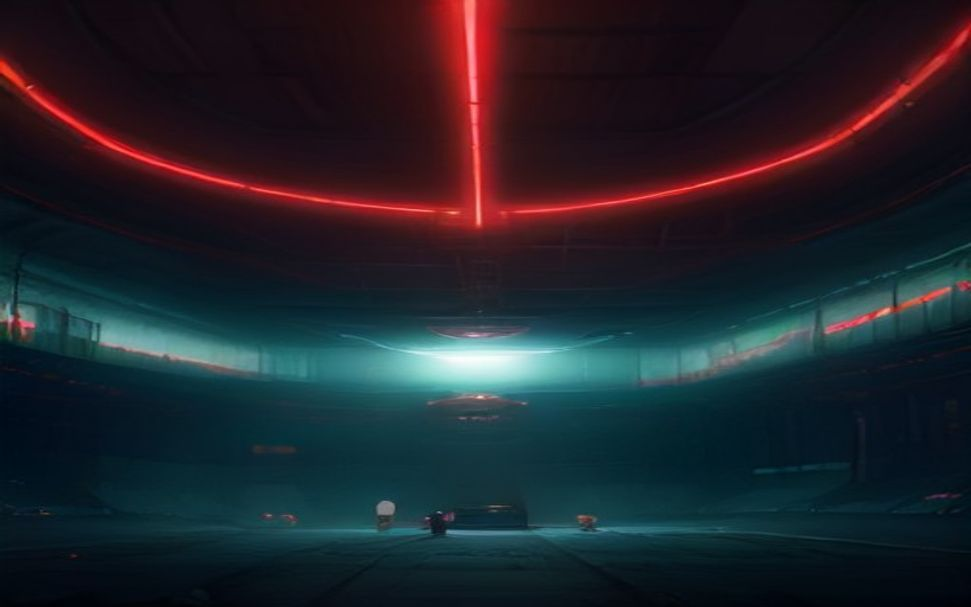

classic-bones-modern-fusion · 웹툰 조준
돌아오지 않는 항로로 부치는 마지막 배송 — 수백 년 검증된 오디세이를 우주 운송선에 이식하다.
등장인물 · 뼈대 역할 매핑
EP.01 — 마지막 항로

부름. 엔진도 끄지 못할 만큼 파산 직전의 운송선. 회사 관제가 홀로그램을 띄운다 — 회수만 하면 배는 도현의 것이 된다. 계약서의 화물란은 검게 지워져 있다. 그러나 그가 부름을 받는 건 빚 때문이 아니다. 손목의 낡은 출입증엔 ‘정거장 4-B’ — 만료 전에, 거기서 기다리는 사람에게 가야 한다.

여정. 별과 성운 사이를 배 한 척이 가른다. 그런데 항로엔 같은 모델의 화물선 잔해가 즐비하다 — 규격이 똑같은 배들이, 하나같이 부서진 채. 루카가 잔해에서 아직 깜빡이는 조난 비컨을 줍는다. ID는 긁혀 판독 불가. 둘은 처음으로 이 항로를 의심한다.

시련. 버려진 정거장에서 조난 목소리가 흘러나온다. 도현은 소름이 돋는다 — 그 목소리가 자기 목소리를 닮았다. ‘살아 있는 사람이 있다’며 홀린 루카가 도킹을 시도하고, 정거장의 감압 함정이 그를 삼킨다. 마지막 무전. “선장님… 저 목소리, 선장님이었어요.” 크루는, 이제 없다.

목표 도달 — 반전. 도현이 홀로 컨테이너를 연다. 저온 수면 캡슐 둘, 잠든 얼굴은 — 자기 자신, 그리고 루카. 지워진 코드 아래 라벨: CAPTAIN UNIT · ITER.47. 그는 원본이 아니라 47번째 반복이었다. “딱 한 번이면 당신 겁니다”는 47번 되풀이된 거짓말이고, 항로의 잔해도, 사이렌의 익숙한 목소리도, 전부 먼저 죽은 자기 자신이었다.

귀환. 도현은 대체 캡슐을 배달하지 않는다. 회수 지시를 끊고, 뱃머리를 집으로 돌린다 — 자기가 갈아 끼우는 부품이 아니라는 걸 증명할 곳은 거기뿐이니까. 사이렌의 정거장이 뒤로 작아진다.

귀환·대가. 항로 끝, 집(정거장 4-B). 그러나 출입증은 만료됐고 — 문 안에는 먼저 돌아온 도현이 그의 자리에 살고 있다. 기다리던 사람은 그 도현을 “당신”이라 부른다. 원본은 없었다. 집은 사람이 아니라, 누구든 채워지는 슬롯이었다. 도현은 문 앞에서 돌아선다 — 캡슐 둘을 실은 채, 회사도 집도 아닌 제3의 방향으로 항로를 끈다.
※ 작화는 이미지 모델로 자동 생성(src/render_art.py). 이미지가 없는 컷은 코드로 만든 벡터 장면으로 대체됩니다.
구조는 데이터로 고르고, 이야기는 모델이 쓴다.